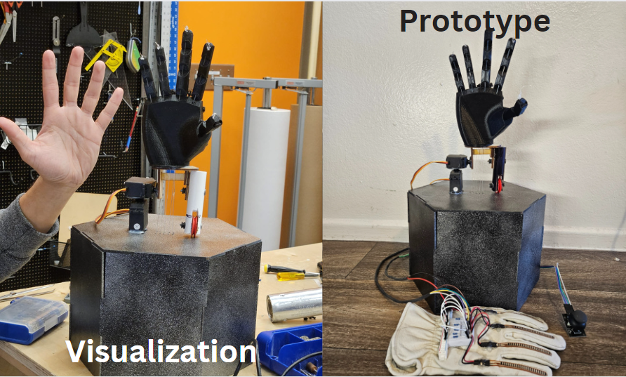

An Animatronics Robotic Mimicking Hand
What:
This project features a 15-DOF robotic hand designed to mimic human finger movements for applications in animatronics, prosthetics, and interactive entertainment.
How:
The design includes:
- High-torque servo motors (20 kg/cm) enabling realistic finger movements.
- 3D printed PLA filament parts (0.2mm resolution) reinforced with wooden frames for durability.
- Microcontroller-based control system for high dexterity and precise movement.
The hand dimensions are 15cm in length and 3cm in width, with a 90-degree flexion and 180-degree extension angle.
Results:
The project achieved high levels of dexterity and realism in finger movements, making it suitable for various applications including animatronics and prosthetics.